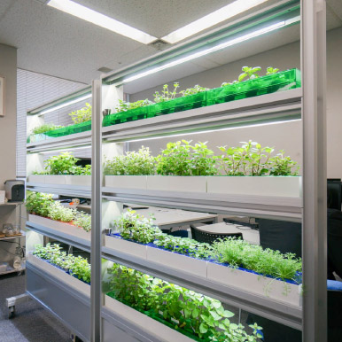
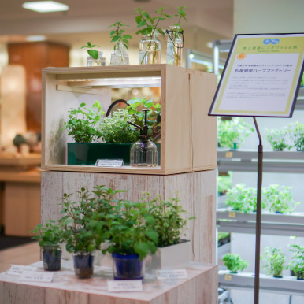

INTRODUCTION


One of the pruposes of the Future Agriculture with Far east Russia Pre-Master to PhD Program (FARM) is to trains the leaders for future agriculture. We belive, future agriculture is a plant factories with artificial light, as a mPFAL, inside the city areas, inside bildings, inside restourans. Thise kind of plant factories represent a solution, not for one problem, but for many problems associeted with large-scale, traditional agricultural practies. For example, the farmers becomes older, but the younger generation people does not want to work in contryside and moving to cities. On the other hand, plant factories help solve the problem of climatic conditions for growing fresh vegetables. They are protected from environmental influences, natural disasters, and plant diseases.
This program trains leaders for future agriculture, which include highly advanced greenhouse horticulture and artificial-light plant factory. Participants learn from diverse fields such as agricultural engineering, food marketing, crop cultivation, and the environmental control. Topics range from food production to distribution and sales businesses. Graduates will possess the skills to contribute to innovations in future agricultural techniques and participate in Russo-Japanese joint enterprises in the Russian Far East.